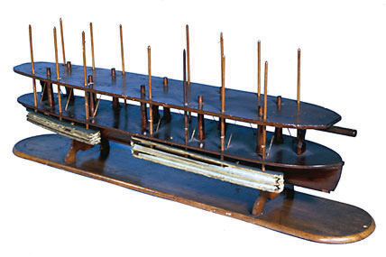

Anyone alive when the U.S. Constitution was adopted would be surprised at the size and scope of the U.S. federal government today. What would not surprise them, however, is the existence of the U.S. Patent and Trademark Office (USPTO)United States Patent and Trademark Office. This federal agency approves patent applications and officially grants trademark status to qualified marks, but only a court can finally determine the validity of a patent or trademark application., since the establishment of a system to protect patents is one of those few congressional powers enumerated in Article I, Section 8 of the Constitution. That clause, known as the Copyright ClauseThe clause within Article I, Section 8 of the U.S. Constitution that authorizes Congress to pass laws protecting intellectual property., says that Congress may “promote the Progress of Science and useful Arts, by securing for limited Times to Authors and Inventors the exclusive Right to their respective Writings and Discoveries.” Keep the key words of this clause in mind, as we’ll come back to them later: “promote progress,” “limited times,” and “exclusive.”
The USPTO Web site is a treasure trove of information as it includes a searchable database for trademarks and patents. See if you can search these databases for well-known trademarks or patents.
Although the Constitution addresses only copyrights and patents, modern intellectual property (IP) law also includes trademarks (probably left out of the Constitution because of the relative unimportance of corporations and branding at the time) and trade secrets (a relatively new form of IP protection). Unlike other controversial portions of the Constitution, such as state rights and the role of the judiciary, the value of laws that protected authors and inventors was well accepted in 1787, when inventions of new machines were shaping up to be part of the fabric of the new country. Indeed, the attendees at the Constitutional Convention took a break from their work to watch the first steamship in the Delaware River. One of the first patents granted was to Abraham Lincoln, who drew on his experience as a young man making his way from Indiana to New Orleans along the Ohio and Mississippi rivers on a flatboat to devise a system to lift and drop boats over shallow water without dropping off their cargo. A scale model of his invention is on display at the Smithsonian (Figure 9.3 "President Lincoln’s Patent"). Lincoln, who many historians described as mechanically inclined and fascinated by engineering, felt that the patent system added “fuel of interest to the fire of genius.”
Figure 9.3 President Lincoln’s Patent
Source: Photo courtesy of the Smithsonian National Museum of American History, http://americanhistory.si.edu/collections/object.cfm?key=35&objkey=19.
Essentially, the Copyright Clause permits (even commands) the federal government to protect certain products of the mind, just as much as it protects personal land or money. If someone trespasses on your property, you can call the police and have them removed or you can sue them in court for damages. In either case, the full force and power of government is involved. The same thing can be said about IP. On the other hand, you know from your economics classes that, in general, our capitalist economy frowns on monopolies. We believe that monopolies are immune from competitive pressures and can therefore charge exorbitant prices without any regard to the quality of their product. Efficiency suffers when monopolies are allowed to exist, and ultimately the consumer loses in choice and price. If you think about it, though, the Copyright Clause essentially allows the government to create a special kind of monopoly around IP. Take, for example, a pharmaceutical company that invents a certain kind of drug and applies for a patent on that drug. If the government grants the patent, then the company can charge as much as it wants (some drugs can cost tens of thousands of dollars per year for consumers) without any regard for competitors, since competitors are shut out of that drug market by virtue of the patent. If any competitor dares to copy the drug to compete against the inventing company, the full force and weight of the government will be brought down on the competitor. Violations of patent law carry extremely stiff penalties.
How can we say that monopolies are bad, and yet grant Constitutional protection to monopolies on IP? The answer lies in the genius of the Copyright Clause itself. As in all monopolies, there are two sides: the producer and the consumer. The producer always wants the monopoly to last as long as possible, while the consumer wants the monopoly to end as quickly as possible. The Copyright Clause strikes a compromise between the producer and the consumer in two ways.
First, the Clause states that Congress can grant the monopoly only to “promote the progress of Science and Useful Arts.” In other words, the monopoly exists for a specific purpose. Note that “making Beyoncé rich” or “allowing Pfizer to make billions of dollars” is not the purpose. Rather, the purpose is progress. Granting monopolies can encourage progress by providing a financial incentive to producers. Singers, songwriters, inventors, drug companies, manufacturers—they all invent and innovate in the hope of making money. If they knew that the law wouldn’t protect what they came up with, they’d either not invent at all or they’d simply do it for themselves and their families, without sharing the fruits of their labor with the rest of society.
Second, the clause states whatever monopoly Congress grants has to be for a “limited time.” In other words, at some point the monopoly will end. When the monopoly ends, science is once again progressed because then society can freely copy and improve upon the producer’s products. Society benefits greatly from the expiration of these IP monopolies. Important drugs such as aspirin and penicillin, for example, can now be purchased for pennies and are accessible to the entire human population. Grand literary works, such as Shakespeare’s Hamlet or Beethoven’s Fifth Symphony, can be performed and enjoyed by anyone at any time without seeking permission or paying any fees or royalties. These inventions and works are in the public domainAny intellectual property not protected by law and freely available for any member of the public to use., to be enjoyed by all of us.
The Copyright Clause does not state how long the monopoly can last; it leaves that task to Congress. Congress must make the decision based on what’s best to promote progress. Remember, though, that producers want monopolies to last as long as possible. For example, consider how long copyrights last. Since 1976 copyrights have lasted for fifty years after the death of the author. After that, copyrighted works fall into the public domain (such as works by Shakespeare or Beethoven). In 1998, however, Congress began considering adding an extra twenty years to that term, for a total of seventy years after the author’s death. In the early part of the twentieth century, the United States experienced a cultural renaissance that accompanied the Industrial Revolution. The invention of the phonograph and cameras allowed the creative genius of Walt Disney, George Gershwin, and Charlie Chaplin (to name a few) to flourish. Under the 1976 copyright law, though, some of these early works (including early versions of Winnie the Pooh) were about to fall into the public domain by 1998. The United States was also under some pressure from international trading partners to increase the copyright term.
As a result of these pressures, U.S. Representative Sonny Bono (himself a popular artist together with his former wife Cher) introduced the Copyright Term Extension Act to add twenty years to copyrights. During hearings on this bill, Congress heard testimony from Jack Valenti, then president of the Motion Picture Association of America, an industry group that represents film studios and corporations. When asked how long he thought copyrights should last, he answered “Forever minus a day.” Although Sonny Bono’s bill passed, whether or not “forever minus a day” will eventually become the law as Congress seeks to strike the right balance between protection and access and whether it satisfies the Constitution’s demand that the monopoly last for a “limited” time remain unresolved questions.
The Constitution commands Congress to provide monopoly protection for intellectual property, but only for purposes of progressing science and useful arts, and only for a limited time. Content producers will always want legal protection to last as long as possible to maximize profits, while the public good benefits when content falls into the public domain. Congress is under intense pressure to resolve this tension.